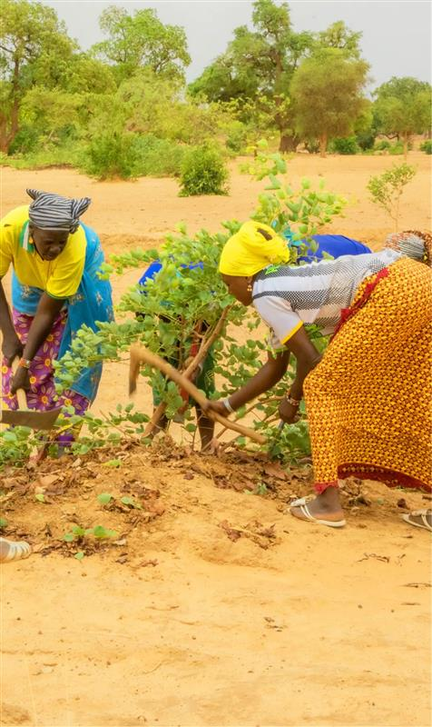
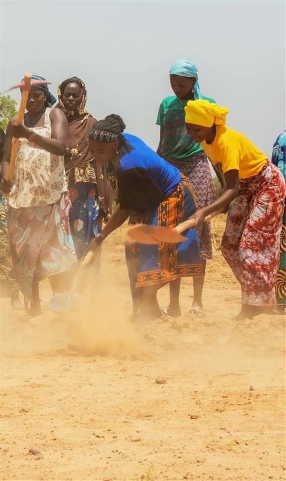
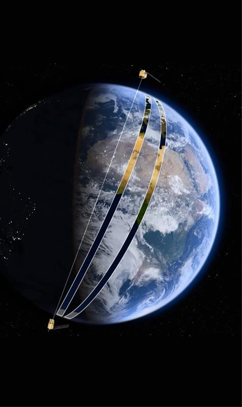

WHO IS BEHIND JESAC?
Community engagement, scientific expertise, and novel technologies
Funded by the EU Delegation to the African Union and under the AU-EU Youth Cooperation Hub instrument, JESAC is implemented by the joined forces of Oxfam, Lobelia Earth, and Caelum Labs and communities in Niger and Burkina Faso.
This community of practice (community engagement, scientific expertise, and novel technologies) demonstrates the positive potential for future replications by establishing logistical and technical protocols.

WHAT DOES JESAC DO?
Transparent and accurately monitored CO₂ offsetting involving active youth and women in land regeneration
Young people and women are restoring over 200 hectares of drylands’ sites in Burkina Faso and Niger following the Assisted Natural Regeneration methods.
Carbon storage, biodiversity, and rural livelihoods are accurately monitored, triggering the traceable and transparent payment system. The nature-based solution approach enables farmers to be remunerated and supports climate change mitigation.
Offsetting CO₂ via the JESAC project is a socio-economic preference.

WHO PARTICIPATES IN JESAC?
1.400 young farmers (50% women and 50% men) engaged for climate change mitigation activities
JESAC stands for Jeunesse Sahélienne pour l’Action Climatique: youth and women engagement is at the heart of this project implemented in Burkina Faso and Niger. They implement agroforestry activities and climate-resilient practices.
The solution ensures that proposed monitoring and traceable payments reach the community, increasing the socio-economic opportunities while strengthening their environmental and climate leadership, raising awareness, and mobilizing in favour of increased climate governance at all levels.

HOW DO WE WORK?
Satellite imagery, Artificial Intelligence and blockchain technologies to track and assess drylands’ CO₂ offsetting potential
Satellite imagery and Artificial Intelligence synergy leverages biophysical variables monitoring such as tree growth or CO₂ sequestration. Blockchain infrastructure guarantees the traceability of the mobile payments.
The highly innovative combination of scientific expertise and novel technologies guarantees full transparency and neutrality of the whole chain.
SOURCE: JESAC